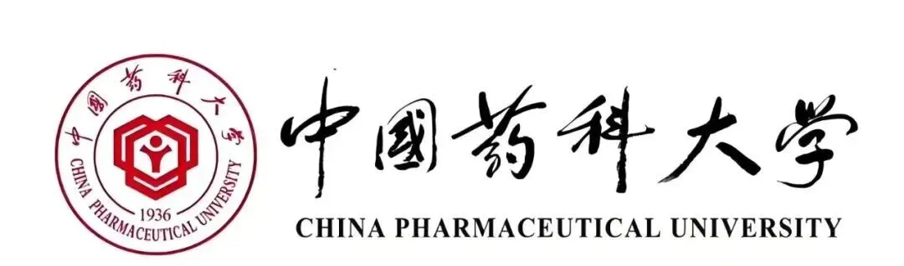

中国药科大学智能药学交叉学院赵明团队招聘研究员博士后/研究助理
原文：https://mp.weixin.qq.com/s?__biz=MzAwMzIzOTk5OQ==&mid=2247531896&idx=1&sn=05b42cc34c88b35fbffe8fb87deb0690&chksm=9b3c0428ac4b8d3e1cc024adf243417439bf8860b12e0bd2f547ffeca2b4bed954db4da33cb0#rd 合集：求职/求学/招聘
01
写在前面
我们长期发布招聘/求职板块(甚至我给自己都发了求职：Biomamba求职| 国奖+4篇一作SCI)，欢迎各位老师/老板欢迎联系~我们也在招贤纳士Biomamba生信基地秋季招聘开启！其它需要求职的小伙伴也欢迎把简历发给我们[Biomamba_zhushou]，大家一起找工作/学习。用人单位也可以联系我们免费刊登招聘信息~
02
ABOUT US

**赵明，博士 /研究员，中国药科大学智能药学交叉研究院课题组长（PI）。**研究方向：转化基因组学与人工智能药物开发，近年来一直从事临床基因组学、生物信息学与mRNA药物开发。
专注于血液肿瘤和实体肿瘤的临床分子诊断与肿瘤新抗原发现，积极与临床研究者合作，作为一作或通讯作者身份在Cancer Letters, Cell Research, Cancer Communication, Clinical Cancer Research,Haematologica等发表SCI论文13篇。注重转化应用研究，临床分子诊断方面已获得LDT 立项5项，IVD转化1项。同时，作为资深的mRNA药物开发研究人员，曾在2019年（COVID-19大流行之前），共同申请拿到了中国第一个肿瘤个性化mRNA疫苗的重点研发专项（2019YFA09005900, 全合成mRNA恶性肿瘤治疗性疫苗的设计与构建及转化研究）。开发了肿瘤新抗原预测和mRNA疫苗设计生物信息平台，应用于晚期胰腺癌，经过4年多的研究，主导开发并在国际上首次报道了KRAS G12V mRNA疫苗的IIT临床试验（Cell Research，2024），取得了非常好临床疗效，该产品也于2025年3月通过了IND默示许可（受理号CXSL2400922），开始进入I期临床研究（临床试验注册号：CTR20252578，ChiCTR2500106571）。
俞巍：中国药科大学智能药学交叉研究院，副研究员。 南洋理工大学, 电子电气设备,博士，曾任英特尔（中国）资深AI算法工程师，研究方向：大规模高性能并行计算与生物医药大数据挖掘。
武欣仪：中国药科大学理学院，副教授。 美国西北大学, 计算机科学与电气工程, 博士，研究方向：单细胞3D图像学习和虚拟细胞构建，以一作者和通讯作者身份发表论文3篇，拥有国内和国际授权专利各1项。
**课题组近期拟利用单细胞、空间转录组学、多重免疫荧光等结合 AI技术应用于细胞靶向LNP递送系统开发、靶点发现和mRNA序列优化。**实验室目前正处于起步阶段经费充足，平台优秀，待遇优厚，固定岗位充足。因发展需要招聘助理研究员、博士后，具体如下：
03
JOIN US
**一、**体内生成 mRNA药物开发与AI药物开发研究员和副研究员
岗位和要求请见： 中国药科大学江北创新中心诚聘海内外英才，但是，也不仅限于以上岗位，如果你有更创新的交叉研究背景或者方向 ，特别推荐联系我们，中国药科大学求贤若渴！
二、助理研究员（2-4 名）
A．分子病理研发科研助理岗位职责：
-
1.负责组织切片和空间转录组测序平台的搭建；
-
2.负责组织HE染色和多重免疫荧光病理切片制备和图像分析等；
-
3.负责自制空间转录组测序文库构建和质控研发工作，制定SOP流程等；
-
4.能够熟练、规范、及时、准确地完成实验记录，发现、讨论和解决实验中出现的问题，撰写实验方案和报告；
-
5.协助实验室日常管理，完成领导安排的其他工作。
应聘要求：
-
1.硕士学历或以上，或者本科拥有五年以上工作经验，病理学、分子生物学、细胞生物学等生物或医学相关专业，病理与肿瘤免疫研究背景优先；
-
2.热爱科研工作，具备独立开展科研工作的能力，熟练掌握病理和分子生物学实相关实验操作技能，具有良好的中英文写作能力；
-
3.有良好的沟通能力和团队合作精神，敬业精神，具有较高的纪律性和安全意识；
-
- 具有NGS文库构建、单细胞测序和空间转录组测序样本处理经验者优先，工作优秀者，可以转成课题组博士。
**B．**生物信息工程师科研助理岗位职责：
-
1.负责实验室空间转录组学数据与多重免疫荧光数据整合分析平台搭建；
-
2.负责单细胞数据分析，包括TCR和BCR数据整合分析；
-
3.负责WES/RNAseq/Panel 二代测序数据分析；
-
- 协助指导研究生开展生物信息知识培训和科研工作。
应聘要求：
-
- 具有硕士学位，或者本科拥有三年以上工作经验；
-
2.具有生物信息学、生物统计、数量遗传学、生物物理、应用数学和计算及相关专业背景；
-
3.主观能动性较强，具有较强的自我管理能力和团队协作精神；
-
4.熟悉生物信息学分析工具、具有较好的编程和统计基础（Python/R/Julia等）；
-
- 具有软件/R语包开发、NGS流程开发、多组学数据整合分析、单细胞和空间转录组数据分析经验者优先，工作优秀者，可以转成课题组博士。
二、博士后（ 1-2名）要求：
在国内外已获得生物学、生物信息学等相关专业方向的博士学位，有博士后研究经历者优先；具备单细胞组学、空间转录组学、免疫学、肿瘤学等研究经历者优先；
近期以第一作者或通讯作者的研究成果在高水平国际学术期刊上发表；
责任心强，热爱科研，具有团队精神及领导能力。

联系方式
 请应聘者将个人的应聘材料电子版（包括简历，已发表论文原文等）打包成一个文件，文件名按“赵明教授团队博士后/科研助理+姓名”命名，并通过电子邮件发送至zhaoming159753@cpu.edu.cn（zhaoming159753@126.com），邮件主题注明“应聘赵明教授团队专职科研人员/博士后岗位”。
请应聘者将个人的应聘材料电子版（包括简历，已发表论文原文等）打包成一个文件，文件名按“赵明教授团队博士后/科研助理+姓名”命名，并通过电子邮件发送至zhaoming159753@cpu.edu.cn（zhaoming159753@126.com），邮件主题注明“应聘赵明教授团队专职科研人员/博士后岗位”。
报名时间：本课题组刚刚组建，招聘长期有效，一人一议，依托中国药科大学卓越工程师学院，滚动招聘。